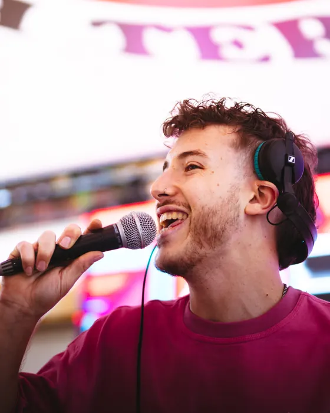

Clubs
Sets for venues and commercial clubs: hits, throwbacks and whatever is playing right now, reading the dance floor all night.
Clubs · Festivals · Town fiestas · Events · WeddingsAvailable all over Spain
Services
Sets for venues and commercial clubs: hits, throwbacks and whatever is playing right now, reading the dance floor all night.
I've played MotoGP at Motorland Alcañiz and at Cheste. I know how to work with production teams, tight schedules and big crowds.
Open-air dances, peñas (local party crews) and the big nights of a town's fiestas. I've played the ones in the province of Teruel for years and I know what the square wants at every hour.
Company dinners and parties, anniversaries, openings and private celebrations, with music chosen for your guests.
From the cocktail hour to the last song of the open bar. We plan the music for the key moments together, with remixes made just for you (the entrance, the first dance, the cake…), and I read the dance floor for the rest of the night.

About me
DJ from Teruel, based in Valencia, Spain. I started DJing at 13 and I've been a professional for 8 years, playing clubs, festivals, town fiestas, private events and weddings all over Spain.
As well as a DJ, I'm a sound technician: I took the Higher Diploma in Sound for Audiovisual and Live Shows at Comenius and studied Music Production and Sound Engineering at Millenia Estudios. You can hear it in how the system sounds, and technical hiccups get fixed without the party stopping.
Where I've played
In the booth
Sessions
On Tour
How I work
Date, place and type of event. That's all I need to tell you if I'm free.
You get a fixed price based on hours, equipment and travel.
We book the date in writing so we both have peace of mind.
I arrive early, set up, sound-check and the party starts on time.
For organisers
FAQ
Yes, I travel all over Spain. I'm from Teruel and live in Valencia, so most of my gigs are in Teruel, Valencia and Aragón, but if your event is somewhere else, drop me a line and we'll sort it out.
Commercial clubs and venues, festivals, town fiestas and open-air dances, private and company events, and weddings. I've played MotoGP Motorland Alcañiz, MotoGP Cheste, La Encerrona, Los Que Faltaban, Los Chachos, Black and the Fiestas del Ángel in Teruel.
Yes. I can bring my Denon DJ Prime 4. If the venue already has a booth, I work with Pioneer CDJ-3000 or better and a DJM-900NXS2, DJM-A9 or DJM-V10 mixer.
It depends on the hours, the equipment needed and the travel. Tell me the date, the place and the type of event and I'll send you a fixed price, no strings attached.
Yes. For festival committees, town councils and venues I put together the line-up with trusted local DJs, with a single contact for every night.
I've been DJing since I was 13 and professionally for 8 years, with over 400 gigs. I'm 24 and I'm also a sound technician: I studied at Comenius and Millenia Estudios (Valencia).
Booking
For festival committees, town councils and venues: Salvaje Booking, my agency, puts the line-up together with DJs I trust. One contact for every night.
Get a quote
My bookings are handled by Salvaje Booking, my agency. Fill in the form with the date and place, or email them directly, and they'll get back to you with availability and a quote.